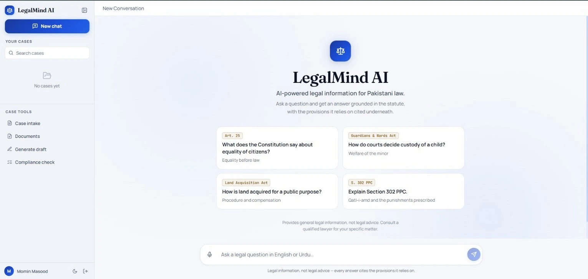

Preserve the context
Organise documents into section-aware chunks and encode them with MiniLM embeddings.
PROJECTS / LEGALMIND AI
A final-year team project at MUST Mirpur: a bilingual Pakistan Laws RAG Assistant connecting conversational answers to legal source material.

Actual application screenshot from the final-year project report.
THE PROBLEM
Legal documents are lengthy, and locating the right section can be difficult. LegalMind AI brings retrieval and a conversational interface together to help users explore Pakistani legal information in English and Urdu.
The project includes case-based conversations, document upload, expandable citations, and workflows for case intake, draft generation, and compliance checklists. When the available context does not sufficiently support an answer, a grounding check can trigger a refusal.
HOW IT WORKS
Organise documents into section-aware chunks and encode them with MiniLM embeddings.
Search Pinecone for candidate passages and use a cross-encoder to rank them for the question.
Evaluate whether the retrieved context provides enough support to proceed.
Use Gemini 2.5 Flash with the retrieved context and present citations in the chat interface.
PRODUCT WALKTHROUGH
Screenshots extracted from the project report. Select an image to view it at a larger size.
Start a legal conversation, switch between cases, or choose a suggested question.
Read a response alongside the legal sources retrieved to support it.
Expand the citation panel to inspect supporting legal passages.
Explore the bilingual query-and-response workflow.
Upload documents within the context of a case.
Capture structured facts before generating a case summary.
Choose a document type and provide the context for an assisted draft.
Supply case context for an assisted checklist.
REPORTED PROJECT EVALUATION
The report’s automated suite uses mocked external services; this checks application logic, not live service behaviour.
36 samples in the development environment. Retrieval only; excludes Gemini answer generation.
The correct statute was retrieved for 15 of 18 answerable questions. This does not measure final-answer accuracy.
Source: project report, Chapters 7–8. Small evaluation sets and unrecorded benchmark hardware limit generalisation. Generated-answer quality was not scored automatically.
PROJECT CONTEXT
Developed by Muhammad Ahsan Rehman, Momin Masood, and Shaheer Ayyaz at MUST, Mirpur, under the supervision of Dr. Anum Tariq.
This case study describes the team’s application and report findings. A public project demo and source repository have not been provided.
LegalMind AI supports access to legal information. Its generated content requires review and is not a substitute for professional legal advice.
← Back to projectsENGINEERING NOTES
Different parts of the application support retrieval, continuity, and inspection of sources.
SQLite stores application records such as chat history, while Pinecone indexes embeddings for semantic retrieval. Keeping these roles separate supports both conversation continuity and passage search.
Section-aware chunks retain the legal context. Candidate passages are retrieved and reranked before the model receives them, and a grounding check assesses whether there is enough support to answer.
Citations give the reader a route back to supporting passages. The source panel is part of the reading workflow, allowing users to inspect the material behind the generated answer.
LET’S BUILD WHAT’S NEXT